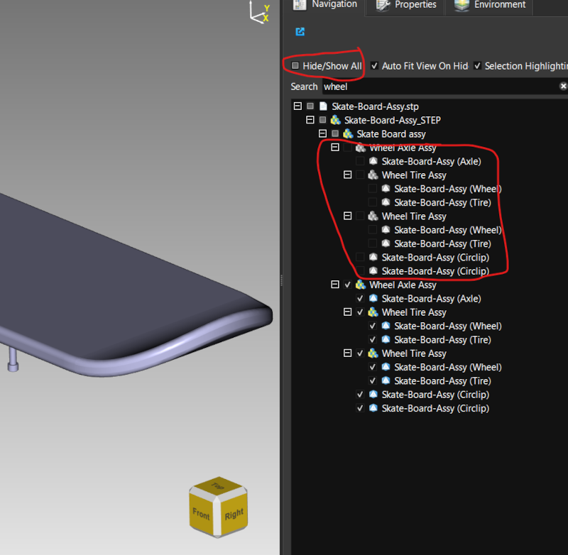
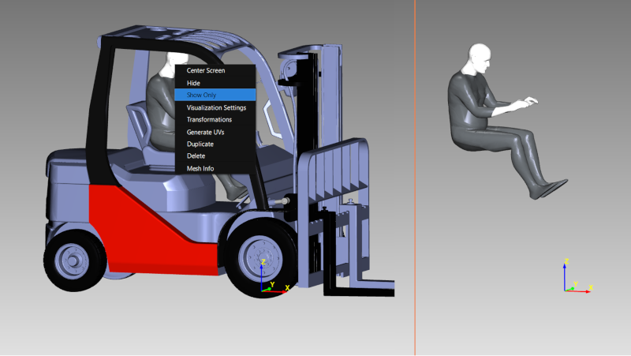
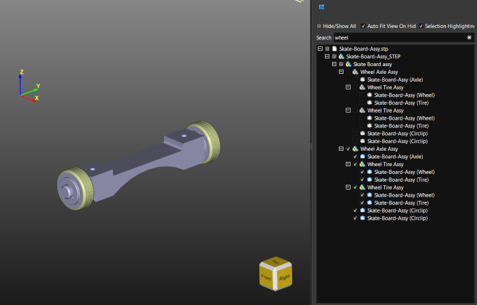

Lesson 11 of 18
Lesson 11: Working with Visibility
Introduction
Managing object visibility is crucial for working with complex scenes. ModelViewer provides multiple ways to control what's shown and hidden.
Basic Hide/Show
Control individual object visibility:
Step 1: Using Checkboxes
In the Model Tree, each object has a checkbox. Check = visible, unchecked = hidden.
Step 2: Using Keyboard
Select objects and press Space to toggle their visibility.
Step 3: Using Context Menu
Right-click selected objects and choose 'Hide' or 'Show'.

Model tree with some checkboxes checked and some unchecked
Assembly nodes have tri-state checkboxes: checking or unchecking an assembly propagates that visibility to every child underneath it, and an assembly with a mix of visible/hidden children shows a partial (dash) check state.
Show Only Selected
Focus on specific objects:
Step 1: Select Objects
Select the objects you want to focus on.
Step 2: Show Only
Press Shift+Space or right-click → 'Show Only'.
Step 3: Result
All other objects are hidden, leaving only your selection visible.

Complex assembly with just a few selected parts visible
Use 'Show Only' when working on specific components in large assemblies. This reduces visual clutter and improves performance.
Show/Hide All
Quickly affect all objects:
Step 1: Show All
Press Shift+A or right-click → 'Show All' to make everything visible.
Step 2: Hide All
Press Alt+A or right-click → 'Hide All' to hide everything.
Swap Visible
Invert visibility state:
Step 1: Activate Swap
Press Alt+S or click 'Swap Visible' button in the toolbar.
Step 2: What Happens
Currently visible objects become hidden, and hidden objects become visible.
Step 3: Use Case
Perfect for inspecting internal parts of assemblies or alternating between different design options.

Before and after swapping visible state
The 'Swap Visible' button in the toolbar shows the current state. When active, hidden objects are being displayed instead of visible ones.
Visual Indicators
How to tell what's hidden:
- Hidden objects appear grayed out in the Model Tree.
- Hidden objects' checkboxes are unchecked.
- When 'Swap Visible' is active, the role of visible/hidden is reversed.
Working with Hidden Objects
Hidden objects are still in memory:
- They can be selected from the Model Tree.
- You can apply materials, transformations, etc., to hidden objects.
- They count towards memory usage.
- They don't affect rendering performance (since they're not drawn).
- Use 'Delete' to actually remove objects from the scene.
Workflow Example
Scenario: You have a car model and want to inspect the engine.
- Select all body panels (hood, fenders, doors).
- Press Space to hide them.
- The engine is now visible and accessible.
- When done, press Shift+A to show all again.
Alternative approach:
- Select just the engine components.
- Press Shift+Space to show only the engine.
- Work on the engine.
- Press Shift+A to show everything again.